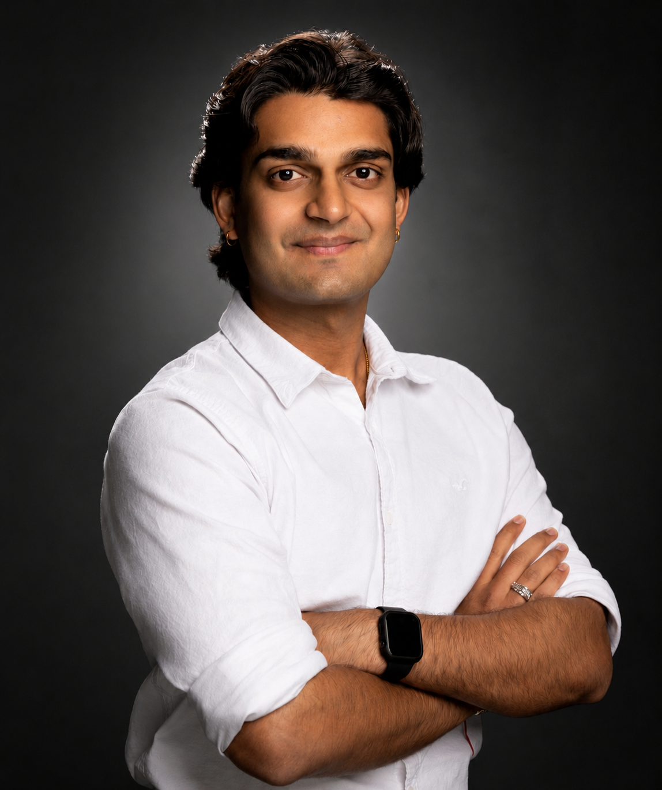

Systems, GNC & IV&V
Requirements, trade studies, system integration, verification and validation, spacecraft dynamics, controls, and flight-system thinking.
About
ERAU Honors aerospace engineering student, private pilot, published AIAA researcher, and Collins Aerospace intern. Main foundation: systems engineering. Supporting range: GNC, avionics verification, simulation, CAD, UAVs, robotics, and operations.

Profile Snapshot
I work best where mission goals, requirements, interfaces, analysis, and test evidence need to connect into one system.
Current work includes Collins Aerospace avionics verification, HyDroQuad robotics research, NASA L'SPACE systems work, bio-inspired UAV design, laser propulsion research, and engineering tutoring.
Flight training keeps the engineering grounded: safety, procedure, judgment, and respect for hardware people depend on.
Technical Skills
Tools and domains I have used in coursework, research, industry work, and project builds.
Requirements, trade studies, system integration, verification and validation, spacecraft dynamics, controls, and flight-system thinking.
CATIA V5, SolidWorks, Onshape, Siemens NX, MATLAB, Simulink, ANSYS Fluent, STK, Fusion 360, 3DEXPERIENCE, CAD drawings, and 3D printing.
Python, MATLAB, C++ for Arduino, LaTeX, SAP, Linux, PowerShell, IBM DOORS, data analysis, automation, and operational workflows.
Working Style
Mission, constraints, interfaces, and success criteria before the model.
CAD, simulation, and trade studies should support decisions, not just look polished.
Research writing, tutoring, and team roles trained me to explain technical work directly.
Involvement
Technical drawing, aircraft work, UAV work, professional events, and student leadership.
Events Outreach Officer / Member. Organized professional events, introduced a Space Design Competition, and supported Design Build Fly with 2D drawings, drafting sheets, and laser-cut production material.
Built alumni connections for honors mentorship, networking, and professional-development opportunities.
Conferences, professional communication, and engineering community building.
Fairing concepts for a large UAV, focused on protecting electrical systems while keeping the geometry practical for CAD and manufacturing.
Custom RC quadcopter design in CATIA V5 with integrated electrical systems and successful flight testing.
Supported restoration and successful flight of an Aeronca Chief, including oil-system contamination work and engine inspection support.
Certifications
Awards & Honors
Technical Interests
Languages